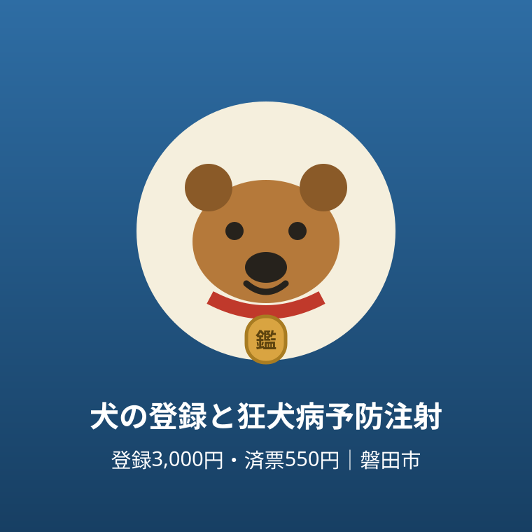

手続き・制度
磐田市の犬の登録と狂犬病予防注射｜登録手数料3,000円・済票550円と届出の段取り

この記事の要点
Q. 磐田市で犬を飼い始めたら、まず何をすればいいですか？
A. まず市への登録です。環境課または各支所の市民生活課で、手数料3,000円。鑑札・愛犬手帳・門標シールが交付されます。狂犬病予防注射は毎年4月から6月に動物病院で受け、注射済票の交付手数料は550円です。
導入——犬を迎えた日、手続きはまだ終わっていない
子犬を迎えた、保護犬を引き取った、実家の犬を自分の家で飼うことになった。犬との暮らしが始まる日は慌ただしく、手続きのことはつい後回しになります。
けれども飼い犬には、法律で決まった登録と、毎年の狂犬病予防注射があります。磐田市の公式ページには、登録の窓口と手数料、注射の時期と届出の段取りがまとまっています。知らないまま月日が過ぎると、注射の時期を逃したり、動物病院で「まず登録を」と言われたりします。
この記事では、磐田市の公式ページ「飼い犬の登録と狂犬病予防注射」と「犬・猫の飼い方」で確認した範囲に絞って、登録・注射・その後の届出を順番に整理します。金額は市の案内どおり、登録手数料3,000円、注射済票の交付手数料550円です。
先に結論を書きます。順番は「登録が先、注射が後」です。未登録の犬には注射済票が発行されません。飼い始めたら、まず登録を済ませてください。
なお、この記事は手続きの整理です。犬の健康状態によっては注射を受けられない場合もあり、その扱い（猶予）も含めて、市の案内に沿って書きます。
まず、公式資料から事実を整理する
犬の登録は、狂犬病予防法第4条により飼い主に義務付けられています。磐田市では、環境課または各支所の市民生活課で登録申請を行います。登録をすると、犬の鑑札・愛犬手帳・門標シールが交付されます。登録手数料は3,000円です。
他市から転入してきた犬も、届出が必要です。反対に、磐田市から他市へ転出する場合は、転出先の自治体の窓口で届け出ます。「前の住所地で登録したから、そのままでよい」にはならない、という点が引っ越しのときの注意点です。
狂犬病予防注射は、毎年4月から6月の間に受けさせることが狂犬病予防法で義務付けられています。受けさせる場所は、かかりつけの動物病院です。その際、愛犬手帳を忘れずに持参するよう、市は案内しています。
注射後に動物病院から「狂犬病予防注射済証」が発行された場合は、環境課または支所市民生活課へ届け出てください。ただし、動物病院で「注射済票」を受け取れる場合は、届出は不要です。この二つは名前がよく似ていますが、別のものです。
市も見分け方を案内していて、注射済証は紙で作られた証明書、注射済票は色の付いた金属のプレートです。届出のときの持ち物は、狂犬病予防注射済証または狂犬病予防注射猶予証、愛犬手帳、そして注射済票の交付手数料550円です。
順番の注意がもう一つあります。犬が未登録の場合、注射済票は発行されません。注射が先に済んでいても、済票を受け取るには登録が先に必要です。初めて犬を飼う方は、登録と注射を一続きの手続きとして考えてください。

交付を受けた鑑札と注射済票は、犬に装着してください、と市は書いています。どちらにも番号が刻印されていて、犬が迷子になったり災害に遭ったりした場合に、飼い主を探す手がかりになります。飾りではなく、身元を示す札です。
磐田の暮らしに置き換える
窓口は、磐田市役所の西庁舎1階にある環境課の生活環境グループと、各支所の市民生活課です。問い合わせは環境課（電話0538-37-2702）です。本庁舎まで行かなくても、最寄りの支所で済む手続きが多いのは、磐田市の面積を考えると実務的な利点です。
注射の時期は毎年4月から6月です。新年度の始まりと重なるため、仕事や学校の予定で頭がいっぱいになりがちな時期でもあります。「春になったら動物病院」という予定を、家族のカレンダーに先に入れておくのが、逃さないための工夫です。
老齢や病気の治療中などの正当な理由があり、獣医師の判断で注射が免除された場合は、「狂犬病予防注射猶予証」が発行されます。その場合は、猶予証をもって直接、または電子申請で、環境課または支所市民生活課へ届け出てください。この届出に手数料はかかりません。「受けられないから何もしない」ではなく、「猶予の届出をする」が正しい段取りです。
登録した内容に変更があったときも届出が要ります。登録してある犬の所有者や所在地が変わった場合は、環境課または支所市民生活課へ届け出てください。飼い主の住所や飼い主が磐田市内で変わった場合は、オンラインでも届け出ることができます。市外から転入した犬や、市外で登録のある犬を譲り受けた場合は、旧所在地の犬の鑑札が持ち物になります。
飼い犬が亡くなった場合も、死亡の届出が必要です。提出先は環境課生活環境グループまたは支所市民生活課で、持ち物は愛犬手帳、犬の鑑札、最新年度の注射済票です。死亡届はインターネットからも届け出ることができます。悲しい場面ではありますが、登録が残ったままだと翌年度以降の案内が届き続けるため、落ち着いた頃に済ませてください。
犬が亡くなったときの、もう一つの市の窓口が火葬の委託です。市役所へ火葬を委託する場合は、ペットを段ボール箱などに入れてフタを閉めた状態で環境課へ持ち込みます。手数料は4,400円で、受付は月曜日から金曜日の午前9時から午後4時30分です。食べ物やおもちゃなどの副葬品は一緒に入れられず、委託業者が合同火葬するため、焼骨は飼い主に戻りません。豊田支所では火葬の受付はできない、という点も市が明記しています。
登録してある犬の火葬を委託する際の持ち物は、愛犬手帳、犬の鑑札、最新年度の注射済票です。死亡届の持ち物と重なります。つまり、亡くなったときの手続きは「死亡届」と「火葬の委託」が対になっていて、どちらも愛犬手帳と鑑札が要ります。手帳を家族の分かる場所に置いておく理由は、こういう場面にもあります。

飼い方の面でも、市のページに基本が書かれています。犬は必ずつないで飼うこと、散歩のときも丈夫なくさりや綱でつなぐこと、フンは処理道具を持って必ず持ち帰ること。登録や注射と同じく、近所との関係を保つための約束事です。
評価——良い点と、注文したい点
良い点は、手数料と交付物がはっきりしていることです。登録3,000円で何がもらえるか、済票の交付が550円であることが、市のページに明記されています。動物病院へ行く前に、財布の中身まで見通しが立ちます。
良い点はもう一つ、病院で済票まで受け取れれば市の窓口への届出が要らないことです。注射と済票の交付が一度で終わるなら、平日に窓口へ行く負担が消えます。変更届・猶予の届出・死亡届に電子申請が用意されている点も含め、「窓口に行かずに済む」道筋が複数あるのは助かります。
注文したい点は、「注射済証」と「注射済票」の名前の紛らわしさです。市がわざわざ写真付きで見分け方を案内していること自体、この二つが混同されやすい証拠でしょう。病院でもらった紙が済証なのか、金属のプレートが済票なのかを、その場で確認する一手間が、飼い主側に残されています。
注文したい点はもう一つ、順番の逆転が起きやすい点です。注射を受けたのに済票が出ない、という場面は、未登録であることが理由です。「未登録の場合はまずは登録申請を」という一文は市のページにありますが、初めて犬を飼う人が最初に目にする場所に、この順番が大きな図で示されていると、病院と窓口の往復は減るはずです。
鑑札と済票の装着が、迷子や災害のときに飼い主を探す手がかりになる、という説明も良い点に数えます。手続きの意味が「義務だから」だけでなく「犬を守るため」と結びついていると、装着を続ける動機になります。
対案・結論——登録を先に、注射は春の予定に
結論として、犬を飼い始めたら最初の1か月のうちに登録を済ませ、毎年4月から6月の注射を家族のカレンダーに入れてください。この二つで、法律上の義務の大半は果たせます。
動物病院で注射を受けたら、その場で確認することがあります。「注射済票はここで受け取れますか」。受け取れるなら届出は不要、済証だけをもらったなら、環境課か支所へ届け出ます。この一言で、済票のもらい忘れが防げます。
愛犬手帳は、鑑札と済票の番号とあわせて、家族全員が場所を知っている引き出しに保管してください。迷子になったときの連絡先は、環境課（0538-37-2702)、西部保健所（0538-37-2245)、磐田警察署（0538-37-0110）です。手帳の表紙に書き写しておくと、いざというときに探し回らずに済みます。
引っ越しや譲渡で飼い主や所在地が変わったら、その都度、変更の届出をしてください。市内の変更ならオンラインでもできます。登録情報が今の暮らしと一致していることが、迷子や災害のときに犬が家へ戻る近道になります。
確認する順番
- 犬が登録済みかどうかを確かめる。未登録なら環境課または支所市民生活課で登録申請（手数料3,000円、鑑札・愛犬手帳・門標シールが交付）
- 毎年4月から6月の間に、愛犬手帳を持って動物病院で狂犬病予防注射を受ける
- 病院で注射済票を受け取れたか確認する。注射済証だけの場合は、済証と愛犬手帳、交付手数料550円を持って環境課または支所へ届け出る
- 鑑札と注射済票を首輪などに装着する。住所・飼い主の変更、猶予、死亡は、その都度届け出る（変更・猶予・死亡は電子申請も可）
飼い犬がいなくなったときの連絡順も、市のページに書かれています。速やかに、市役所環境課（0538-37-2702）、西部保健所（0538-37-2245）、磐田警察署（0538-37-0110）の三か所へ連絡し、見つかったときも同様に報告します。県の迷い犬情報のページへの案内も、市のページからたどれます。鑑札と注射済票を首輪に付けているかどうかが、この場面で効いてきます。
家族で共有するための記録
犬の手続きは、世帯主だけが知っている、という状態が一番危うい形です。登録の有無、注射を受けた日、済票の年度は、家族のだれが見ても分かる場所に残してください。
とくに春の注射は、受けた年と受けていない年の区別がつかなくなります。愛犬手帳に受けた日を書き込むだけでなく、スマートフォンのカレンダーに翌年の4月の予定として繰り返し登録しておくと、家族の誰の予定表にも現れます。
親の家で飼っていた犬を子世帯が引き取る、といった引き継ぎの場面では、鑑札と愛犬手帳も一緒に受け取ってください。この二つが無いと、変更届の持ち物や登録の確認で手間が増えます。
大石の視点
ここからは公表情報ではなく、執筆者の見解です。不動産の現場では、ペットと暮らせる住まいかどうかが、住まい探しの早い段階で話題になります。飼える部屋が見つかって引っ越しが終わると安心してしまいますが、犬側の住所変更にあたる登録事項の変更届まで意識が回っている方は、決して多くありません。
鑑札と注射済票は、小さな金属のプレートです。けれども番号ひとつで飼い主へたどり着けるという意味では、住まいの鍵や表札と同じ「帰る場所を示すもの」だと感じます。装着は義務であると同時に、犬への目印でもあります。
欲を言えば、登録の窓口と動物病院のあいだで、「登録済みかどうか」がその場で確かめられる仕組みが広がると、済票のもらい忘れや二度手間はさらに減るはずです。仕組みの大枠はすでにあります。つなぎ目の工夫が次の一歩だと感じています。
まとめ
磐田市の飼い犬の手続きは、登録（生涯に一度、手数料3,000円）と、毎年4月から6月の狂犬病予防注射（済票の交付手数料550円）が柱です。未登録の犬には済票が発行されないため、順番は登録が先です。
注射の後は、病院で済票を受け取れたかを確認し、済証だけなら窓口へ届け出てください。鑑札と済票は必ず装着し、変更・猶予・死亡の届出も忘れずに。それが今日からできる段取りです。
登録と注射は、犬との暮らしの始まりと、毎年の春に置かれた、二つの小さな約束事です。どちらも、済ませてしまえば難しいものではありません。
手続きの内容は変わることがあります。実際に手続きをする前に、磐田市の公式ページで最新の案内を確認してください。
- 登録は狂犬病予防法第4条の義務。環境課・支所で手数料3,000円、鑑札・愛犬手帳・門標シールを交付
- 注射は毎年4月から6月。病院で済票を受け取れれば届出不要、済証のみなら届出が必要で交付手数料550円
- 未登録の犬に済票は出ない。変更・猶予・死亡の届出もあり、一部は電子申請ができる
参考にした公式情報
- 飼い犬の登録と狂犬病予防注射／磐田市（2026年11月11日確認）
- 犬・猫の飼い方／磐田市（2026年11月11日確認）
最終確認日：2026-11-11 ／ 本記事は公表情報と執筆者の見解を分けて記載しています。制度・数値・公開状況は変更される場合があるため、最新情報は磐田市公式ページでご確認ください。